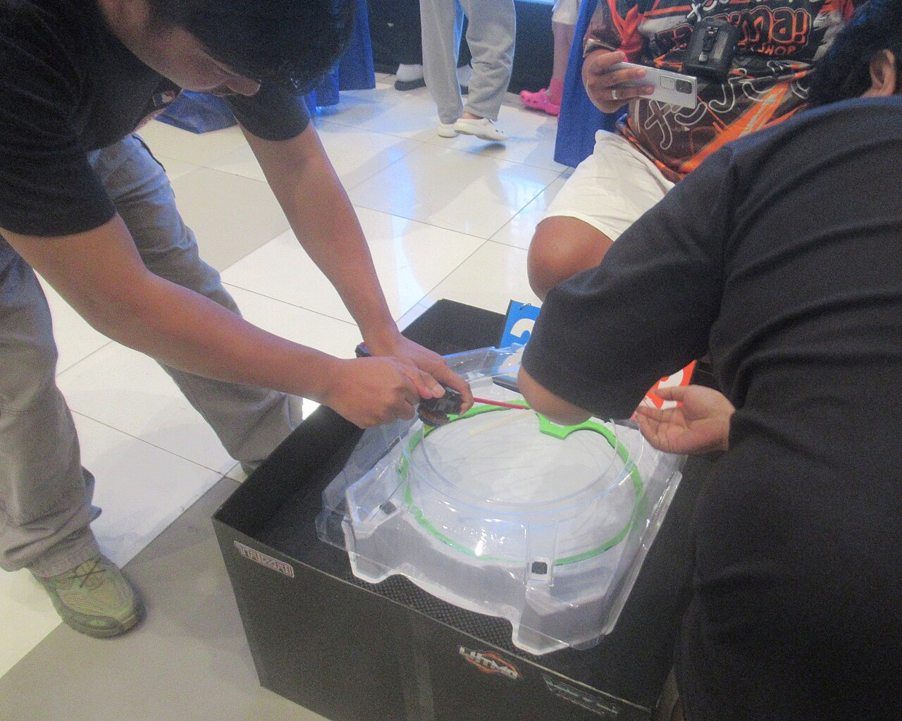
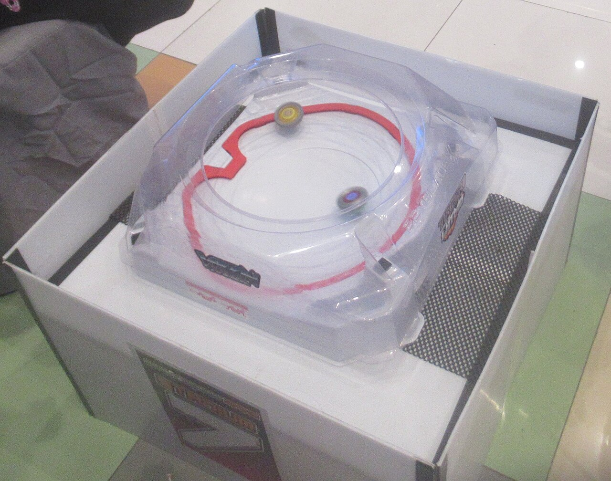

🎬
發射與轉法
按 ▶ 播放動畫，從正上方看陀螺在對戰盤裡怎麼跑。
📺 怎麼看動畫？
- 彩色的線是陀螺跑過的路線，可以用「路線」開關打開或關掉。
- 左上角的轉速條越來越短，代表陀螺越轉越慢。
- 盤子外圈一格一格的是 X 衝刺軌道：陀螺的軸心咬住這圈齒條時，會突然加速，叫做「X 衝刺」。
- 動畫是示意圖，用來看「怎麼動」，時間和速度不是真的。
1發射 3 步驟

- 1.把陀螺裝到發射器上。
- 2.把發射器拿到對戰盤上方。
- 3.喊「3、2、1，Go Shoot！」，快速用力拉，陀螺就會飛進盤子裡。
2四種軸心，四種跑法

同樣在一個盤子裡，換一個軸心，跑法就完全不一樣。看完四段動畫，比一比：誰的路線最大？誰轉最久？
3發射方式也有差
📐 直立發射
發射器拿平，陀螺會從中間附近開始跑。適合防禦型、持久型，讓它好好站在中間。
↗️ 傾斜發射
發射器稍微斜一點點，陀螺比較容易馬上衝向盤邊、咬住 X 軌道。適合攻擊型。
🔄 右旋和左旋
大部分陀螺是右旋（從上面看是順時針）。少數是左旋，要搭配對應的發射器，請看包裝上的標示。
🧪 小實驗：用同一顆陀螺，直立發射 3 次、傾斜發射 3 次，數一數哪一種比較常出現「X 衝刺」？
傾斜只要一點點就好，太斜陀螺會一落地就倒下喔！
4真實的陀螺慢動作影片
影片：GolhaMedia，CC BY-SA 4.0｜Wikimedia Commons
想看 Beyblade X 的正式介紹，可以請大人陪你看官方網站：
👨👩👧 給大人：網路上的對戰影片很多，建議先挑官方頻道，並陪孩子一起看。